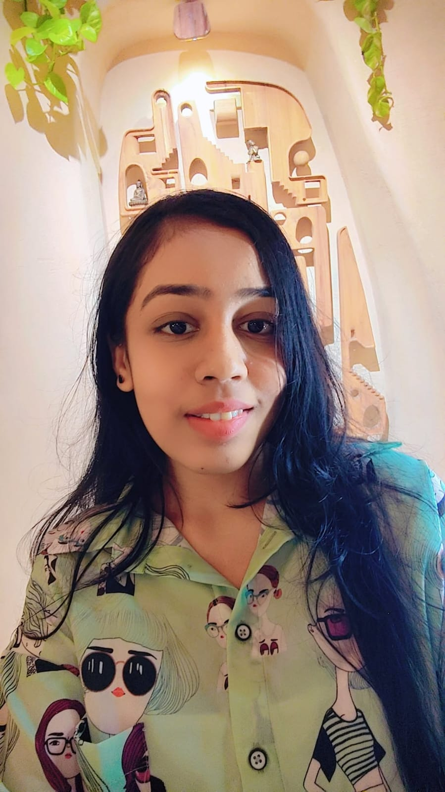

01↗A FLAGSHIP PROJECT · BUILT BEYOND GITHUB
MAIN PROJECT · RECENT
↗Pravaah
My recent flagship project, developed outside GitHub. I’ll add its full story and technical details in a public showcase.
HELLO, WORLD — I’M DIVYASHREE ✳
B.Tech IT student at JG University. I turn questions into ideas, and ideas into experiences people can actually use.

I’m Divyashree, an Information Technology student who enjoys building useful things and learning by doing.
I completed my Diploma in Information Technology at Government Polytechnic, Ahmedabad, and I’m now pursuing my B.Tech in IT at JG University. I’m drawn to projects that make complicated ideas feel clear, approachable, and human.
✳ Outside the code, I’m happiest when a new idea turns into something real.
Curiosity is part of the stack. Here are the tools behind some recent projects.
From a personal flagship build to experiments in AI, data, and the web.
My recent flagship project, developed outside GitHub. I’ll add its full story and technical details in a public showcase.
A project I’ve built and want to share here. I’ll add its full story and feature details with the public showcase.
A multi-university credential platform that chains certificate records with SHA-256 hashes for tamper detection and quick verification.
A browser-based document vault with file previews, keyword-based priority tags, filters, integrity fingerprints, and JSON export.
A movie recommender combining content and collaborative filtering, mood picks, TMDb details, and voice-enabled discovery.
Have a project, a question, or want to talk about something I’ve built? I’d love to hear from you.